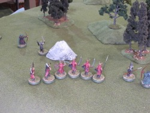
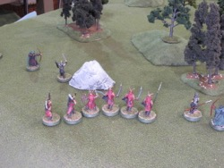

{kind=link}
{kind=link}
{kind=link}
 

This is a scenario of Games Workshop's Middle Earth Strategy Battle Game, the second in the A Shadow in the East sourcebook. Following on the events of The Fall of Amon Barad -- at least as happened "historically", if not in my attempt -- Cirion tries to escape his Easterling pursuers to warn Gondor of Khamûl's assault.
(Click on any image to see an enlargement.)
The Good forces, led by Cirion (front left), are a mixed lot of Rangers and Warriors of Minas Tirith. Múrin and Drár (front row) will wander into the action after a few turns.
The Evil forces are a Captain (front, with gold chevrons on his base), a small squad of Easterling warriors, and five kataphrakts (back row).
No models begin the game on the board. Entry is by dieroll, with the dwarves and kataphrakts unable to appear before turn 3. All the models (bar the dwarves) enter from the south edge, in the foreground.
My table isn't quite 4' long, so when the action reaches near the northern edge I will have to shift things 8 inches south and add a few more obstacles so that Cirion has to travel the regulation distance.
Said distance is important because that's how the Good side wins: by existing Cirion off the north (far) edge of the map. Evil wins by preventing that.
As always, Good starts a scenario with Priority. Which is a distinct disadvantage here, since Evil is likely to see where Cirion ends up and can potentially concentrate his forces nearby.
There are some hedging words in the previous paragraph because each figure rolls a die for entry, with a 1/3 chance of not entering this turn, a 1/3 chance of entering where you want, and a 1/3 chance of entering where your enemy wants.
Good rolls for his troops first and then lastly Cirion. A ranger and a bowman fail to enter, but the other troops are fairly well scattered across the board. Cirion's entry point is determined by the Good player, so he picks the southwest corner, hoping that he will have the opportunity to force many Easterlings to enter at the opposite corner.
Evil has only one bowman held back, but most of the troops are indeed placed by Good and so are pretty far away from Cirion. But Evil does get to place the Captain and a few warriors right on Cirion's heels. But you can't charge on the turn you enter, so Cirion survives at least one turn....
Evil Priority, 5-4.
Getting Cirion pinned down this early seems disastrous, so Cirion spends a Might point to call a Heroic move.
This puts the choice on Evil to contest that or not. Evil has a Might point deficit -- the Captain has only two to Cirion's three -- and deems it not worth it for only a 50% chance to pin Cirion. So Good's Heroic Action proceeds, and Cirion and his immediate band get out of charge range this turn.
Evil pursues, of course, and engages elsewhere on the board whereever possible. His bowman that failed to enter last turn comes on and tries to line up a shot on Cirion.
The remaining Good figures head to block the routes to Cirion, with the bowmen moving half so they can still take potshots. The two good figures that didn't enter last turn fail again to enter this turn.
What shooting there is ends up ineffective, as is combat, with the Easterlings winning the fights but unable to wound the heavily-armored Minas Tirith warriors.
Evil Priority, 6-2.
The Priority roll is bad news for Cirion again, who spends another Might point to call a Heroic Move. The Easterling Captain is tempted, but now the Captain has a 2-1 Might point advantage and decides to let Cirion go one more time.
So Cirion again runs, closely pursued by the Easterling Captain and his squad. Elsewhere the Evil troops swarm the scattered Good warriors. The kataphrakts can enter this turn, but unlucky dierolling sees only two making it on the board.
The kataphrakts find themselves in turn pursued by a ranger and bowman that finally enter this turn. Múrin and Drár enter, too, from the north edge. Because my board isn't big enough, they don't physically show up yet.
Evil shooting continues to be miserable, but Good draws the first blood with a well-placed arrow that kills an enemy bowman.
The outnumbered Good troops generally lose their fights, but the heavy armor on both sides prevents any casualties. The Easterling Captain, who you would have expected to do better, gangs up with two warriors against a single Warrior of Minas Tirith, but Evil scores a 4 highest (the Captain himself getting a miserable 1,2) and the single Good die inevitably is a 5. The Warrior is too stunned at his success to follow up with a wound, though.
Casualties: Good 0, Evil 1
Good Priority, 3-1.
The Good men run for the northern board edge, except for the two laggards who tackle the nearest kataphrakts. Múrin and Drár make it on to the table, though they are still well away from the action. (You can just see them in the background of the third picture.)
The Evil forces give chase. The remaining three kataphrakts roll terribly and enter at the far corner of the table, not much better placed than the dwarves at this point.
All the Good models are engaged, but there are two Easterling bowmen eligible to shoot. Both miss.
The Easterling Captain then calls a Heroic combat (first picture). The Evil dierolling is absolutely terrible, getting 2,1,1,1 ... but the Gondorian bowmen only gets a 1 himself and is killed, allowing the Captain and his swordsman comrade to move again. The Captain uses the opportunity to run into combat with Cirion (second picture).
Elsewhere, a Ranger and an Easterling bowman fall.
Then the heroes throw down. The Captain gets only a 4 highest while Cirion gets the 6 and wins the fight. But his wound rolls of 3,1 do no damage.
Casualties: Good 2, Evil 2
Evil Priority, 5-1.
Evil charges, the Captain squaring up against Cirion again. All the Good models end up engaged, barring the two laggards again (why should Evil go backwards to charge them when only Cirion matters?) and the dwarves, who are still making their way towards the action.
All shooting is ineffective, but in the melee another ranger and Warrior of Minas Tirith are slain.
In the battle of the heroes, both sides get a 3 highest, and Evil wins the rolloff. But the Captain proves no more adept than Cirion at wounding his opponent, getting a 2,2 for no effect.
Casualties: Good 4, Evil 2
Good Priority, 6-4.
The Captain uses his last Might point to call a Heroic Move; Cirion counters and now both are out of Might. Evil wins the rolloff and so of course the Captain attacks Cirion.
The rest of movement sees the troops converging on the action in the center.
What little shooting there is has no effect, and the combat phase is also much sound and fury, signifying nothing, as the heavy armor on both sides prevents many a wound.
There is a conspicuous exception to the general lack of effectiveness, and that is the Easterling Captain, who scores a 6 against Cirion, who can only muster a 5 in return. With no recourse to Might, Evil wins the fight and though the Captain is unable to wound the good hero, the supporting pikeman scores the 6 to inflict a wound. Cirion's Fate roll is a 2 ... and so Cirion falls. Game over!
Well, that was abrupt. Cirion's single Wound certainly makes him a relatively fragile hero.
The other surprising characteristic to me was the slow movement of the kataphrakts. I had initially thought they moved at the usual horse rate, but the Fallen Realms source book has them moving the same six inches as the foot troops. No way are they going to chase Cirion down!
This feels like one of those scenarios where the dierolling matters more than most. I think the flow of the game would have been extremely different had Good won the first few Priority rolls and not have to have burned Might to escape.
Not a bad little scenario.
{kind=link}
{kind=link}
{kind=link}
{kind=link}
{kind=link}
{kind=link}
{kind=link}
{kind=link}
{kind=link}
{kind=link}
{kind=link}
{kind=link}
{kind=link}